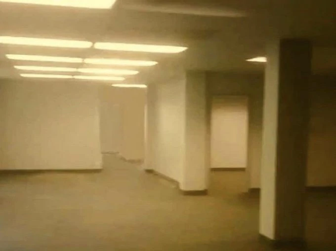
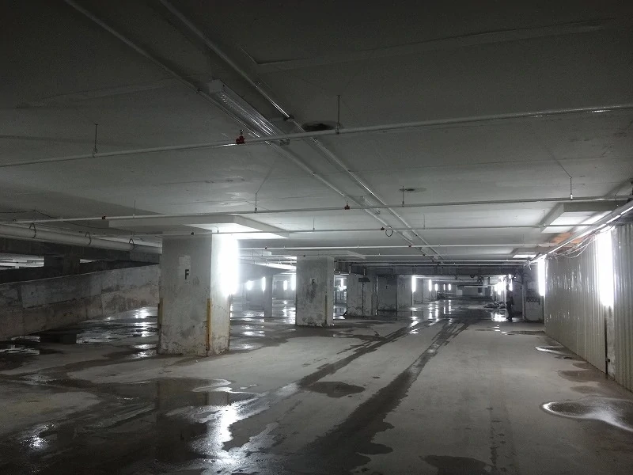
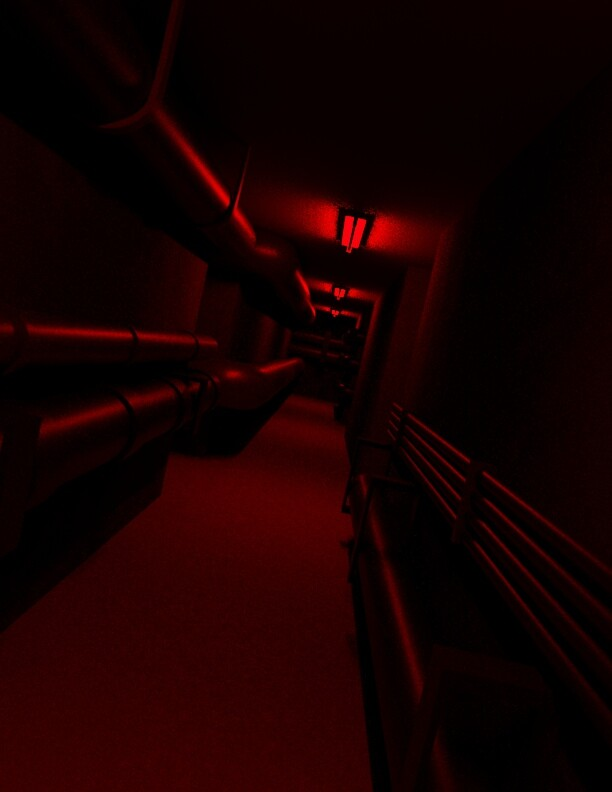

Les différents niveaux
À la base, les Backrooms n’étaient constituées que d’un seul niveau, celui décrit sur les photos des
Backrooms. Par la suite, les internautes ont créé de nouveaux niveaux, jusqu’à en créer un Wiki les
répertoriant presque tous. Il en existerait énormément, ce qui fait qu’il est quasiment impossible d’en
sortir. En exemple de niveaux, sont listés les 3 premiers globalement acceptés et répertoriés par la plupart
des Wiki consacrés au sujet
Niveau 0
Le niveau 0, nommé « Lobby/Tutorial », est représenté sur la photo originale des Backrooms, avec toutes les
caractéristiques les plus connues de la creepypasta, la moquette moisie, les murs jaunes monochromes et les
lumières fluorescentes bourdonnantes. Dans ce niveau, il n’y a pas beaucoup d’entités, mais il est facile de
mourir, notamment à cause de déshydratation, de faim, ou encore de folie. Des zones de no-clip peuvent y
être rencontrés, ramenant le protagoniste au niveau 1 mais il est amusant de noter qu'il est possible de
s'échapper des backrooms.

Niveau 1
Le niveau 1, nommé « Zone habitable », est atteint lorsqu'on no-clip de nouveau, ou que l’on décide
d’errer pendant des jours au niveau 0. Il est quelque peu plus sombre que le niveau 0, et présente une
architecture plus industrielle, avec des sons de type mécanique que l'on entend partout. Ce niveau
ressemble à un entrepôt sombre et miteux, avec du brouillard et des flaques d'eau autour. Contrairement
au niveau 0, les lumières fluorescentes commencent à scintiller plus fréquemment, s'éteignant parfois
complètement. On y croise aussi les premières entités.

Niveau 2
Le niveau 2, nommé « Pipe Dreams », est le troisième niveau des Backrooms, selon la théorie des trois
niveaux. C'est l'un des plus sombres, contenant une architecture encore plus industrielle. Ce niveau se
présente comme une suite de longs tunnels, dont les murs sont tapissés de tuyaux. Il est décrit comme
pouvant être atteint lorsqu'on erre dans le niveau 1 pendant une période suffisamment longue. Sa
température est d’ailleurs beaucoup plus élevée que celle des autres niveaux. Les « survivants » des
Backrooms affirment que la seule façon de s'échapper du niveau est de rester calme, déclarant que « ce
n'est que lorsque les Backrooms sont devenus votre maison que vous pouvez vous en échapper ».
